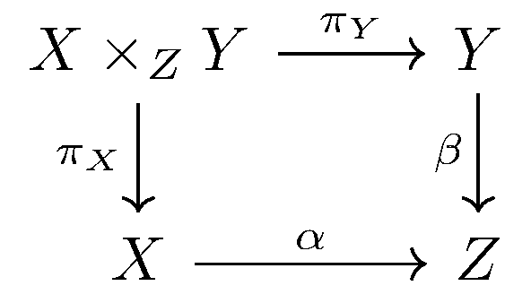
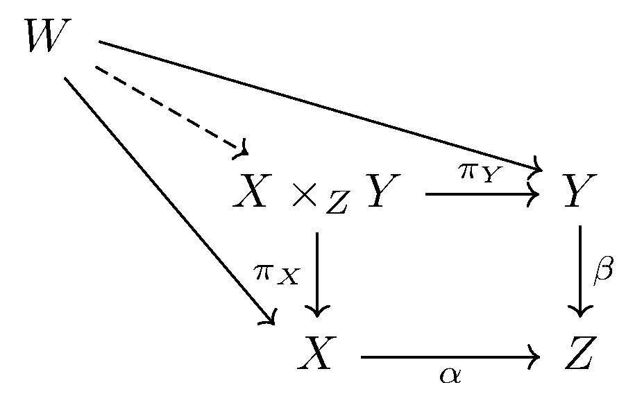
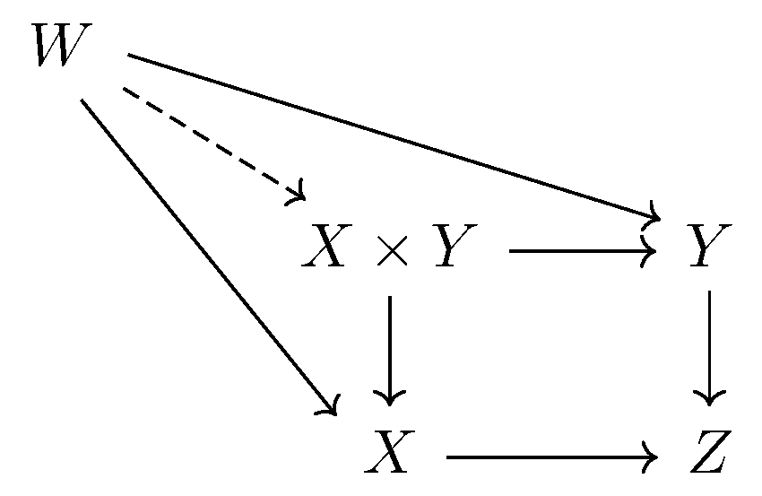

September 20th
Today I learned about fibered products, which are basically products that make diagrams commute. In particular, given objects $X$ and $Y$ with maps $\alpha:X\to Z$ and $\beta:Y\to Z,$ then the fibered product begin by being an object $X\times_ZY$ with maps $\pi_X$ and $\pi_Y$ such that the following diagram commutes.
But to finish the universal property definition, we assert that for any object $W$ with maps $W\to X$ and $W\to Y$ commuting with $\alpha$ and $\beta,$ then those maps factor uniquely through $X\times_ZY.$
So for example, in the category of sets, we claim that $X\times_ZY=\{(x,y):\alpha(x)=\beta(y)\},$ which as claimed is pretty much "$X\times Y$ which makes the diagram commute.'' Indeed, the diagram does commute, and for any $W$ with $f:W\to X$ and $g:W\to Y$ satisfying $\alpha f=\beta g,$ we claim a unique $\varphi$ such that $f=\pi_X\phi$ and $g=\pi_Y\varphi.$ But then this forces\[\varphi(w)=(f(w),g(w))\]in order to make the projections work. (Formally, if $\varphi(w)=(w_x,w_y),$ we must have $w_x=\pi_X\varphi(w)=f(w)$ and $w_y=\pi_Y\varphi(w)=g(w).$) This is indeed a map $\varphi:W\to X\times_ZY$ because $f$ ad $g$ commute with $\alpha$ and $\beta$ already, so we have our unique factorization.
As another example, if $Z$ is a final object in the category, then all of our mappings kind of collapse into each other, implying that we should have $X\times_ZY=X\times Y.$ Indeed, look at the associated diagram.
Note that $Z$ being final implies that there is only one mapping $X\to Z$ and $Y\to Z,$ and for the same reason, the maps $X\times Y\to X\to Z$ and $X\times Y\to Y\to Z$ commute for free as both are $X\times Y\to Z.$ So we are allowed to place $X\times Y$ in this diagram. Now, given maps $W\to X$ and $W\to Y,$ the universal property of $X\times Y$ gives us the unique map for which $W\to X\times Y$ commutes with the diagram, satisfying the universal property of $X\times_ZY,$ so we are done here.